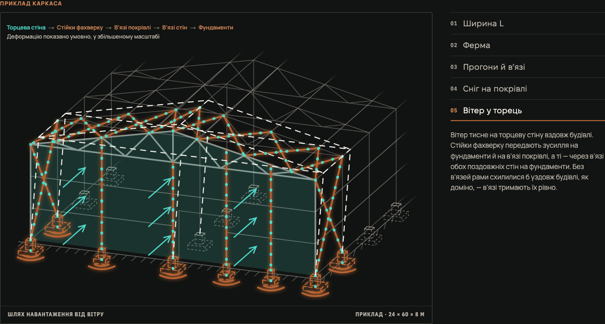
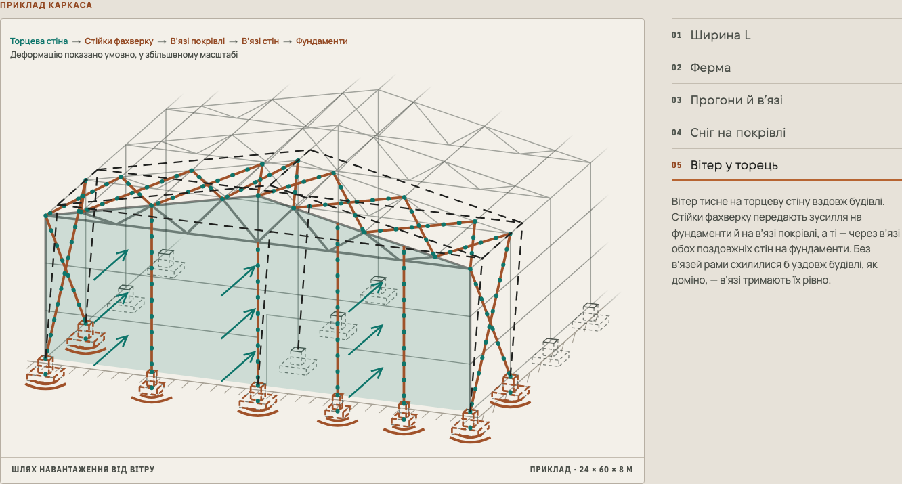
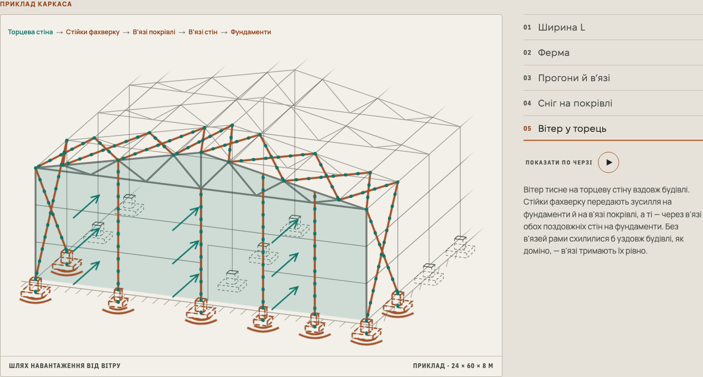

RUBIKON BUILD · ПРОТОТИП · 05.11.2026
Світлий інженерний аркуш
Графітовий каркас на теплому папері. Мідь показує конструкцію, синій — сніг, бірюзовий — вітер. Геометрія, камера й анімація збережені; Dark лишається початковим.
До / після у Light · вітер
До: темний планшет у світлій темі

Після: світле креслення

Порівняння зафіксоване з reduced motion: деформація та пояснювальна примітка показані одразу. Це реальні браузерні знімки, не перемальовані зображення.
Огляд і всі п’ять режимів
Звичайний режим із керуванням показом

Оригінальний ProofContour із фото ангара під цим блоком збережений на темному тлі. Галерея є матеріалом для перегляду та не входить до public/ сайту.